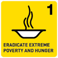
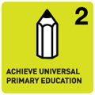
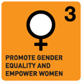
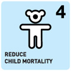
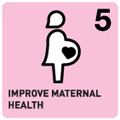
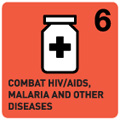
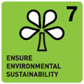
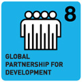

In 2000, 189 nations made a promise to free people from extreme poverty and multiple deprivations. This pledge turned into the eight Millennium Development Goals (MDGs). On June 5, 2013, the MDGs deadline will be just 1,000 days away. The world has entered the final leg of its momentous 15-year journey to halve extreme poverty, reduce child mortality by two-thirds, reverse the tide against HIV/AIDS and malaria, and ensure that more people have access to basic services, such as primary education and safe drinking water.
The MDGs amount to a promise the world made to itself. They are commitments that we have all made to each other. The 2015 deadline, which once seemed so far off, is now fast approaching. So it is time to ask ourselves a series of pointed questions. Where do we stand on these ambitious goals? Have we collectively done enough to convert them into reality? And what needs to happen during the last 1,000 days to ensure that the world not only sprints to the finish line –but blows right through it?
What Are the MDGs?
Goal 1 - Eradicate extreme poverty and hunger
Target A: Halve, between 1990 and 2015, the proportion of people whose income is less than $1.25 a day.
Target B: Achieve full and productive employment and decent work for all, including women and young people.
Target C: Halve, between 1990 and 2015, the proportion of people who suffer from hunger.
Goal 2 - Achieve universal primary education
Target A: Ensure that, by 2015, children everywhere, boys and girls alike, will be able to complete a full course of primary schooling
Goal 3 - Promote gender equality and empower women
Target A: Eliminate gender disparity in primary and secondary education, preferably by 2005, and in all levels of education no later than 2015
Goal 4 - Reduce child mortality
Target A: Reduce by two thirds, between 1990 and 2015, the under-five mortality rate
Goal 5 - Improve maternal health
Target A: Reduce by three quarters the maternal mortality ratio
Target B: Achieve universal access to reproductive health
Goal 6 - Combat HIV/AIDS, malaria and other diseases
Target A: Have halted by 2015 and begun to reverse the spread of HIV/AIDS
Target B: Achieve, by 2010, universal access to treatment for HIV/AIDS for all those who need it
Target C: Have halted by 2015 and begun to reverse the incidence of malaria and other major diseases
Goal 7 - Ensure environmental sustainability
Target A: Integrate the principles of sustainable development into country policies and programmes and reverse the loss of environmental resources
Target B: Reduce biodiversity loss, achieving, by 2010, a significant reduction in loss
Target C: Halve, by 2015, the proportion of the population without sustainable access to safe drinking water and basic sanitation
Target D: Achieve, by 2020, a significant improvement in the lives of at least 100 million slum dwellers
Goal 8 - Develop a global partnership for development
Target A: Develop further an open, rule-based, predictable, non-discriminatory trading & financial system.
Target B: Address special needs of least developed countries.
Target C: Address special needs of landlocked developing countries & small island developing States.
Target D: Deal comprehensively with debt problems of developing countries.
Target E: In cooperation with pharmaceutical companies, provide access to affordable essential drugs.
Target F: In cooperation with private sector, make available benefits of new technologies, especially information & communications
How successful have they been?
Three years to the deadline, we can report broad progress on the MDGs. The Millennium Development Goals (MDGs) agreed to by world leaders over a decade ago have achieved important results. Working together, Governments, the United Nations family, the private sector and civil society have succeeded in saving many lives and improving conditions for many more. The world has met some important targets—ahead of the deadline.
1 Extreme poverty falls in every region
For the first time since the World Bank started to monitor poverty trends, both the number of people living in extreme poverty and the poverty rates fell in every developing region—including in sub-Saharan Africa, where rates are highest. In the developing regions, the proportion of people living on less than $1.25 a day fell from 47 per cent in 1990 to 24 per cent in 2008. In 2008, about 110 million fewer people than in 2005 lived in conditions of extreme poverty. The number of extreme poor in the developing regions fell from over 2 billion in 1990 to less than 1.4 billion in 2008.
Preliminary estimates indicate that the global poverty rate at $1.25 a day fell in 2010 to less than half the 1990 rate. If these results are confirmed, the first target of the MDGs—cutting the extreme poverty rate to half its 1990 level—will have been achieved at the global level well ahead of 2015.
2 The world has met the MDG drinking water target, five years ahead of schedule
In 2010, 89 per cent of the world’s population was using improved drinking water sources, up from 76 per cent in 1990. This means that the MDG target of halving the proportion of the population without sustainable access to safe drinking water has been met, five years ahead of the 2015 target. If current trends continue, 92 per cent of the global population will be covered by 2015.
The number of people using improved drinking water sources reached 6.1 billion in 2010, up by over 2 billion since 1990. China and India alone recorded almost half of global progress, with increases of 457 million and 522 million, respectively.
3 Improvements in the lives of 200 million slum dwellers bring achievement of the MDG target
The share of urban residents in the developing world living in slums declined from 39 per cent in 2000 to 33 per cent in 2012. More than 200 million gained access to either improved water sources, improved sanitation facilities, or durable or less crowded housing. This achievement exceeds the target of significantly improving the lives of at least 100 million slum dwellers, well ahead of the 2020 deadline.
4 The world has achieved parity in primary education between girls and boys
Achieving parity in education is an important step toward equal opportunity for men and women in the social, political and economic domains. Driven by national and international efforts and the MDG campaign, many more of the world’s children have enrolled in school at the primary level, especially since 2000. Girls have benefited the most. Progress is reflected in the gender parity index (GPI), showing the ratio between the enrolment rate of girls and that of boys. The GPI grew from 91 in 1999 to 97 in 2010 for the developing regions as a whole—falling within the plus-or-minus 3-point margin of 100 per cent that is the accepted measure for parity.
5 Highlights of other achievements
- Many countries facing the greatest challenges have made significant progress towards universal primary education
Enrolment rates of children of primary school age increased markedly in sub-Saharan Africa, from 58 to 76 per cent between 1999 and 2010. Many countries in that region succeeded in reducing their relatively high out-of-school rates even as their primary school age populations were growing.
- Child survival progress is gaining momentum
Despite population growth, the number of under-five deaths worldwide fell from more than 12.0 million in 1990 to 7.6 million in 2010. And progress in the developing world as a whole has accelerated. Sub-Saharan Africa—the region with the highest level of under-five mortality—has doubled its average rate of reduction, from 1.2 per cent a year over 1990-2000 to 2.4 per cent during 2000-2010.
- Access to treatment for people living with HIV increased in all regions.
At the end of 2010, 6.5 million people were receiving antiretroviral therapy for HIV or AIDS in developing regions. This total constitutes an increase of over 1.4 million people from December 2009, and the largest one-year increase ever. The 2010 target of universal access, however, was not reached.
- The world is on track to achieve the target of halting and beginning to reverse the spread of tuberculosis
Globally, tuberculosis incidence rates have been falling since 2002, and current projections suggest that the 1990 death rate from the disease will be halved by 2015.
- Global malaria deaths have declined
The estimated incidence of malaria has decreased globally, by 17 per cent since 2000. Over the same period, malaria-specific mortality rates have decreased by 25 per cent. Reported malaria cases fell by more than 50 per cent between 2000 and 2010 in 43 of the 99 countries with ongoing malaria transmission.
Authors and Contributors
Please feel free to reach @Shujian and @Hao. Any feedback would be appreciated!